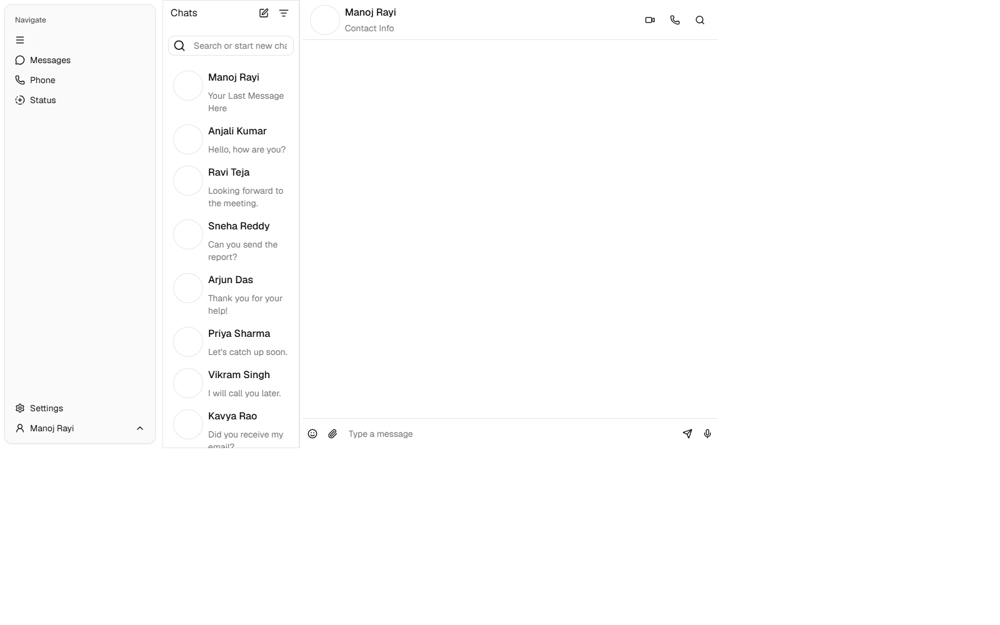
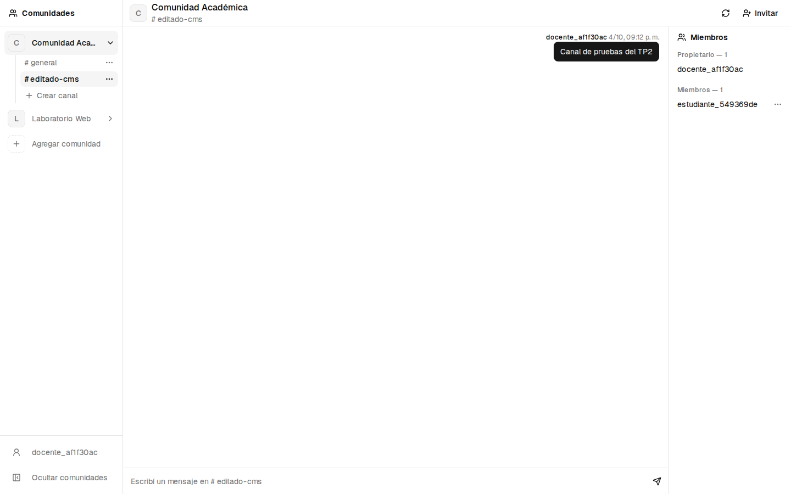
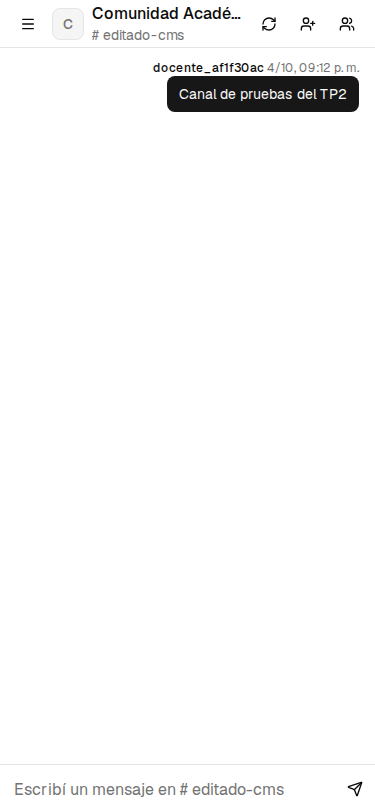

Comunidades, canales y membresías con Next.js y Strapi
Un prototipo para el Trabajo Final de una aplicación de comunicación. Registro e inicio de sesión, comunidades por invitación, canales y conversaciones persistidas. Sin servicios externos, voz ni bots.
Next.js conserva React y TypeScript y organiza rutas y layouts. Strapi administra el modelo y permite extender la API. SQLite permite demostrar el proyecto localmente sin otro servidor de base de datos.
WordPress: se priorizó autorización por comunidad en TypeScript. Directus: alternativa válida, se prefirió la extensión de controladores de Strapi. React con Vite: se eligió la estructura de rutas y layout de Next.js.
chat-template / whatsapp-mock, de rayimanoj8 en 21st.dev. El commit d235a95 conserva la integración anterior a la adaptación. La pantalla original usaba contactos y mensajes de muestra.

Comunidades y canales sustituyen los contactos ficticios. El encabezado refleja la selección y el panel muestra miembros por rol. Los datos provienen de la API autenticada.

Una comunidad tiene canales y membresías. Cada membresía vincula un usuario y un rol. Cada mensaje pertenece a un canal y conserva el autor autenticado. La creación de comunidad genera general y su propietario.
Comunidades: crear, invitar y seleccionar. Canales: navegar y administrar como propietario. Membresías: consultar, cambiar roles y expulsar. El backend comprueba pertenencia y permisos en cada recurso.
Tipografía Geist y tonos neutros. Estados de carga, error y colecciones vacías. Diálogos móviles con gestión de foco y cierre por Escape. El contenido largo se ajusta al ancho disponible.

Crear una comunidad e invitar a una segunda cuenta. Cambiar de canal, enviar mensajes y gestionar un rol. Editar un canal desde el CMS y actualizar la vista. Comparar los controles del propietario con los de un miembro.
npm run verify inicia servicios con una base descartable y ejecuta las pruebas de API e interfaz. La matriz registra resultados y distingue los casos reales de los estados simulados. El lint y la compilación verifican la integración.
El chat estático se convirtió en módulos con datos persistidos y autorización por comunidad. El historial tiene un máximo inicial de 50 mensajes y usa polling. SQLite y localStorage corresponden al alcance del prototipo académico.
Next.js: nextjs.org/docs/app. Strapi: docs.strapi.io/cms. WordPress: developer.wordpress.org/rest-api. Directus: docs.directus.io. Template: 21st.dev/@rayimanoj8/components/chat-template/whatsapp-mock. Detalle en INFORME-TP2.md.